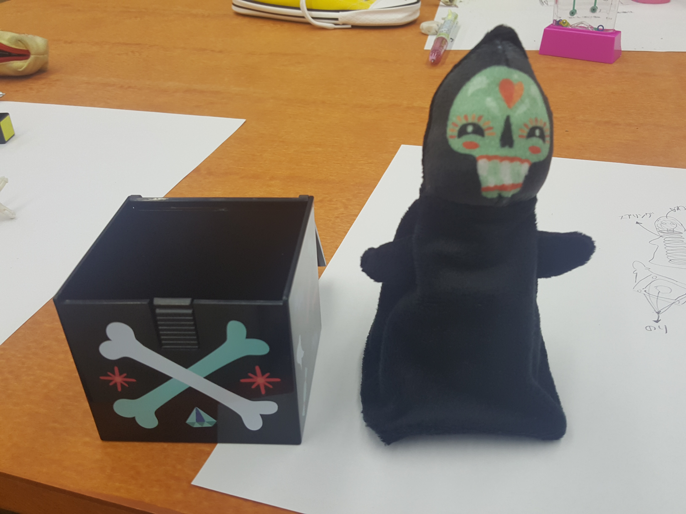
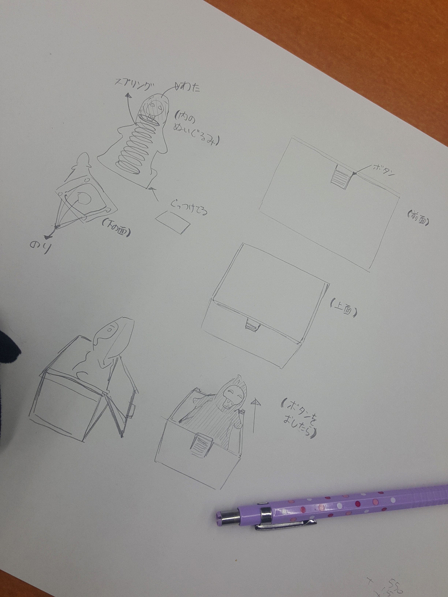
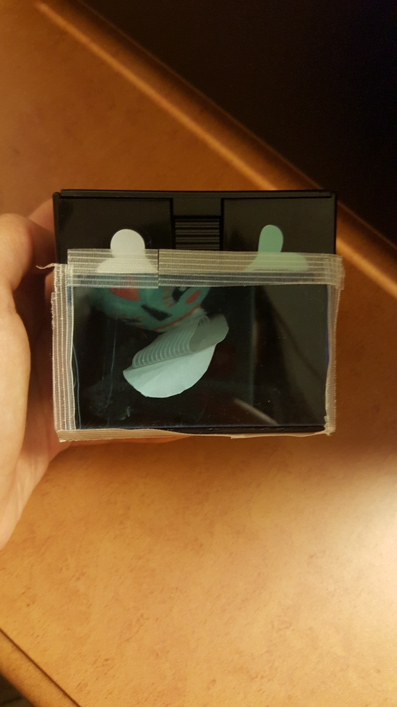

トイ・ハッキング
「ビックリボックスの解体」

ボタンを押したら黒いぬいぐるみが出てくるビックリボックス。
ぬいぐるみを出して、解体してみた。

解体図。
「いらないものにしよう」
このビックリボックスをいらない何かに変える。
私は、ビックリボックスをビックリしないボックスに変える方法を考えた。
見えちゃいけないどころに穴を開ける
ボックスの中に何が入っているのかをわかる人はボックスを開けてもビックリしないはず。

ボックスの前面に穴を開け、透明なアクリルを貼った。
いらないものにはなってあるが、考え方が断片的。
１。他のおもちゃと組み合わせて、新しい何かを作って見たり、
２。ビックリボックスということから離れて考えて見る。
そうしたら、もっといいものができたのかもしれない。
もっと幅広く考えてやってみよう。